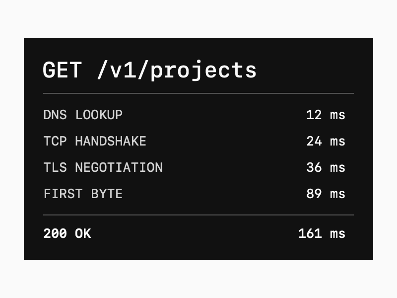

HTTP 请求追踪

这个排版示例把一次 HTTP 请求拆成入口、业务处理和数据读取三段。请求 ID 放在开头，耗时对齐，读者可以先找到最慢的一步，再沿着同一个 ID 查对应日志。
如果做成实际项目，可以在这里放架构图、关键代码和项目链接。

这个排版示例把一次 HTTP 请求拆成入口、业务处理和数据读取三段。请求 ID 放在开头，耗时对齐，读者可以先找到最慢的一步，再沿着同一个 ID 查对应日志。
如果做成实际项目，可以在这里放架构图、关键代码和项目链接。